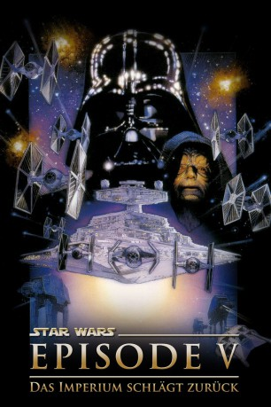

Auszeichnungen: 1 Oscars gewonnen für 2 Oscars nominiert 1 BAFTA-Awards gewonnen
 gesehen am 23.11.2015
gesehen am 23.11.2015Alternativ: Star Wars: Episode V - The Empire Strikes Back
Auszeichnungen: 1 Oscars gewonnen für 2 Oscars nominiert 1 BAFTA-Awards gewonnen gesehen am 23.11.2015
 
 IMDB-Wertung: 8.8 / 10
IMDB-Wertung: 8.8 / 10  IMDB-TOP-Platzierung: 14
IMDB-TOP-Platzierung: 14  Metascore:
Metascore: 
Nach der Zerst��rung des Todessterns geht der Kampf zwischen den Rebellen und dem herrschenden Imperium weiter. Die Rebellen haben sich auf den Eisplaneten Hoth zurückgezogen, doch das Imperium spürt sie auf und zerstört nach hartem Kampf die dortige Basis. Daraufhin teilen sich unsere Freunde auf: Luke gerät mit R2-D2 auf den Sumpfplaneten Dagobah, wo er von dem alten Jedi-Meister Yoda eine Ausbildung im Umgang mit der Macht erhält, während Leia, Han Solo und die anderen sich nach Bespin durchschlagen, wo in einer Wolkenstadt ein alter Freund von Han residiert. Doch dort geraten sie in eine Falle des Imperiums, und Luke muß ihnen zu Hilfe kommen und Darth Vader zu einem Duell herausfordern...
Jahr: 1980
Dauer: 124 Minuten
FSK: 6
Land: USA Studio: 20th Century FoxTonspuren:
Untertitel: Deutsch, Englisch,
Auflösung: 1080p (1920x1080) Größe: 34099 MB
Genre: Action, Abenteuer, Fantasy, Sci-Fi
Regisseur: Irvin Kershner
Drehbuch: Leigh Brackett, Lawrence Kasdan, George Lucas
Soundtrack: John Williams
Darsteller:
 Mark Hamill als Luke Skywalker
Mark Hamill als Luke Skywalker Harrison Ford als Han Solo
Harrison Ford als Han Solo Carrie Fisher als Princess Leia
Carrie Fisher als Princess Leia Billy Dee Williams als Lando Calrissian
Billy Dee Williams als Lando Calrissian Anthony Daniels als C-3PO
Anthony Daniels als C-3PO David Prowse als Darth Vader
David Prowse als Darth Vader Peter Mayhew als Chewbacca
Peter Mayhew als Chewbacca Kenny Baker als R2-D2
Kenny Baker als R2-D2 Frank Oz als Yoda
Frank Oz als Yoda Alec Guinness als Ben, Obi-Wan Kenobi
Alec Guinness als Ben, Obi-Wan Kenobi Jeremy Bulloch als Boba Fett
Jeremy Bulloch als Boba Fett Jack Purvis als Chief Ugnaught
Jack Purvis als Chief Ugnaught Clive Revill als Emperor
Clive Revill als Emperor Kenneth Colley als Admiral Piett
Kenneth Colley als Admiral Piett Julian Glover als General Veers
Julian Glover als General Veers Michael Sheard als Admiral Ozzel
Michael Sheard als Admiral Ozzel Denis Lawson als Rebel Force Wedge, Rogue 3
Denis Lawson als Rebel Force Wedge, Rogue 3 John Ratzenberger als Rebel Force Major Derlin
John Ratzenberger als Rebel Force Major Derlin Martin Dew als Cloud City Guard , uncredited
Martin Dew als Cloud City Guard , uncredited Peter Diamond als Snowtrooper Gunner , uncredited
Peter Diamond als Snowtrooper Gunner , uncredited James Earl Jones als Darth Vader , uncredited
James Earl Jones als Darth Vader , uncredited Ian McDiarmid als Emperor, 2004 DVD version , uncredited
Ian McDiarmid als Emperor, 2004 DVD version , uncredited Temuera Morrison als Boba Fett, 2004 DVD version , uncredited
Temuera Morrison als Boba Fett, 2004 DVD version , uncredited Chris Parsons als 4-LOM / K-3PO / Stormtrooper , uncredited
Chris Parsons als 4-LOM / K-3PO / Stormtrooper , uncredited Treat Williams als Echo Base Trooper , uncredited
Treat Williams als Echo Base Trooper , uncredited John Hollis als Lando's Aide
John Hollis als Lando's Aide Michael Culver als Captain Needa
Michael Culver als Captain Needa Bruce Boa als Rebel Force General Rieekan
Bruce Boa als Rebel Force General Rieekan Christopher Malcolm als Rebel Force Zev, Rogue 2
Christopher Malcolm als Rebel Force Zev, Rogue 2Datei: X:\7+mehr(A-Z)\Star Wars\Star Wars Episode 5 - Das Imperium schlägt zurück (1980, FSK6, 1920x1080).mkv seit 21.02.2015
Festplatte: HD Collection-7+mehr(A-Z)+Person
 Es gibt insgesamt 18 Filme in der Gruppe '7+mehr(A-Z)\Star Wars'
Es gibt insgesamt 18 Filme in der Gruppe '7+mehr(A-Z)\Star Wars'